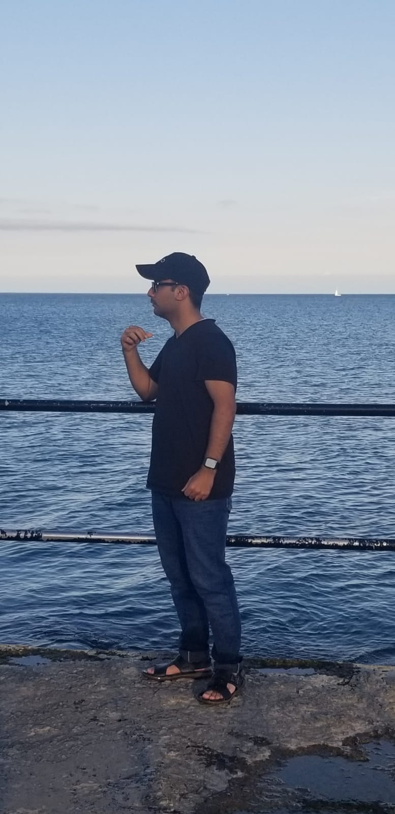

About Me

Hey! I'm Faiq Jadoon, a Software Engineering student at Ontario Tech University. I graduated from Middlefield Collegiate Institute and have a strong background in both programming and digital marketing.
I’ve taught Python to over 80 students, created real-world applications like a face recognition system, a chatbot, and games using pygame. I also have strong experience in digital marketing—managing social media campaigns, running content strategy, and analyzing market trends.
Skills
- Python (OOP, Flask, Tkinter, Pygame, Pandas, NumPy, Web Scraping)
- Digital Marketing (SEO, Social Media, Content Creation, Ads)
- Project Management, Mentoring, Database Scraping & Analysis
Leadership & Volunteering
- President – Programming Club @ MCI: Taught Python, guided projects, mentored 45+ students
- Founder – IT Society @ Beaconhouse (Pakistan): Conducted Python workshops and tech events
- Soup Kitchen Team Lead @ ISM: Led weekly meal sales, raised $3,600 for community causes
- Fundraiser @ SOS Children's Village: Helped raise $1,200 in a week
- Hackathon Leader @ YRHacks: Scraped 34 school databases to help students choose the right path
Outside of coding, I enjoy helping others, building creative projects, and taking on leadership roles that make a real-world impact.